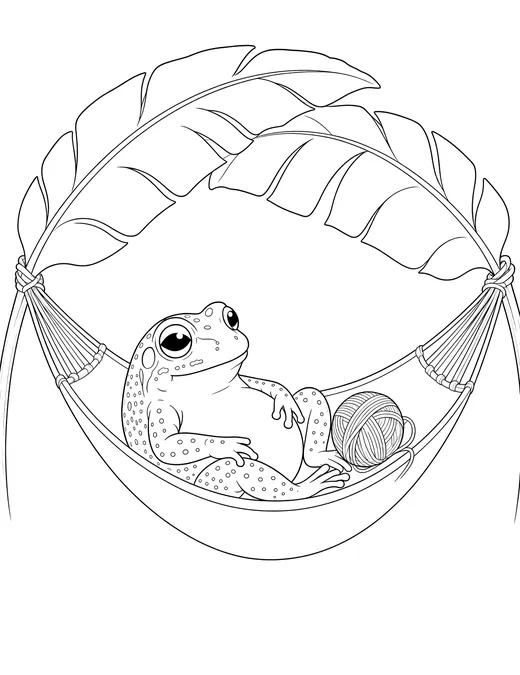
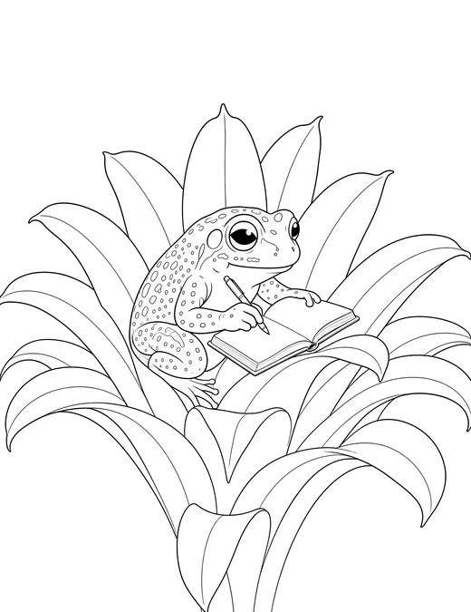
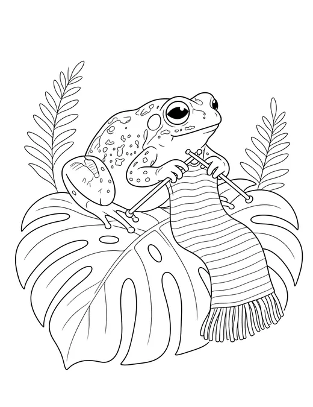
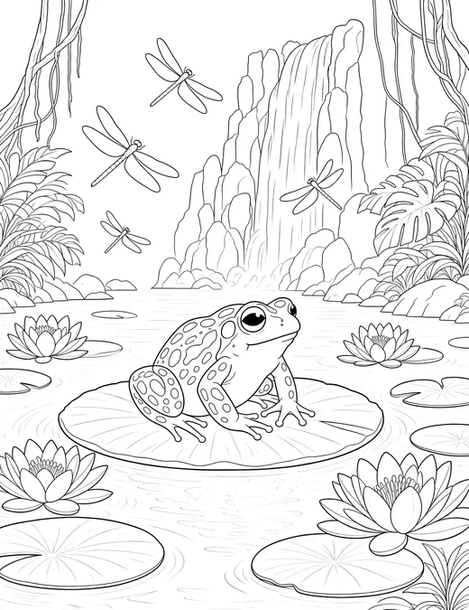
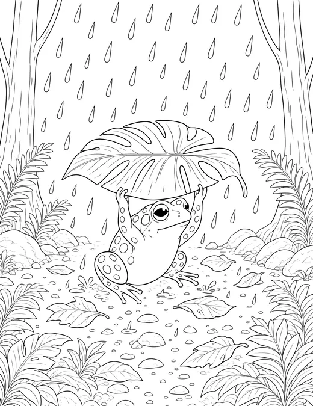
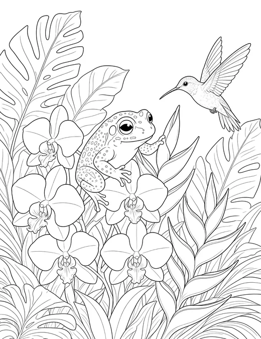

Thanks for signing up.
Here are your six coloring pages. Download whichever paper size your printer uses, then print as many copies as you like.
Frog Frontier Coloring Pages 6 pages · PDF · about 6 MB






Printing them
- Print at actual size or 100%. “Fit to page” shrinks the lines and makes the small spaces fiddly.
- Choose black and white or grayscale. Your printer won’t touch its color ink.
- For markers or watercolor, print on heavier paper or card stock. It stops the color soaking through and the page buckling.
- The pages go from simple to detailed. Page 1 is easiest for small hands, and page 6 suits adults.
While you’re here, the shop has printable frog care handbooks and logs, plus 3D files for things to put in the tank.
See the shopFree for personal and classroom use. Please don’t resell or redistribute the files. If you want to share them, send people to the signup on the home page instead.